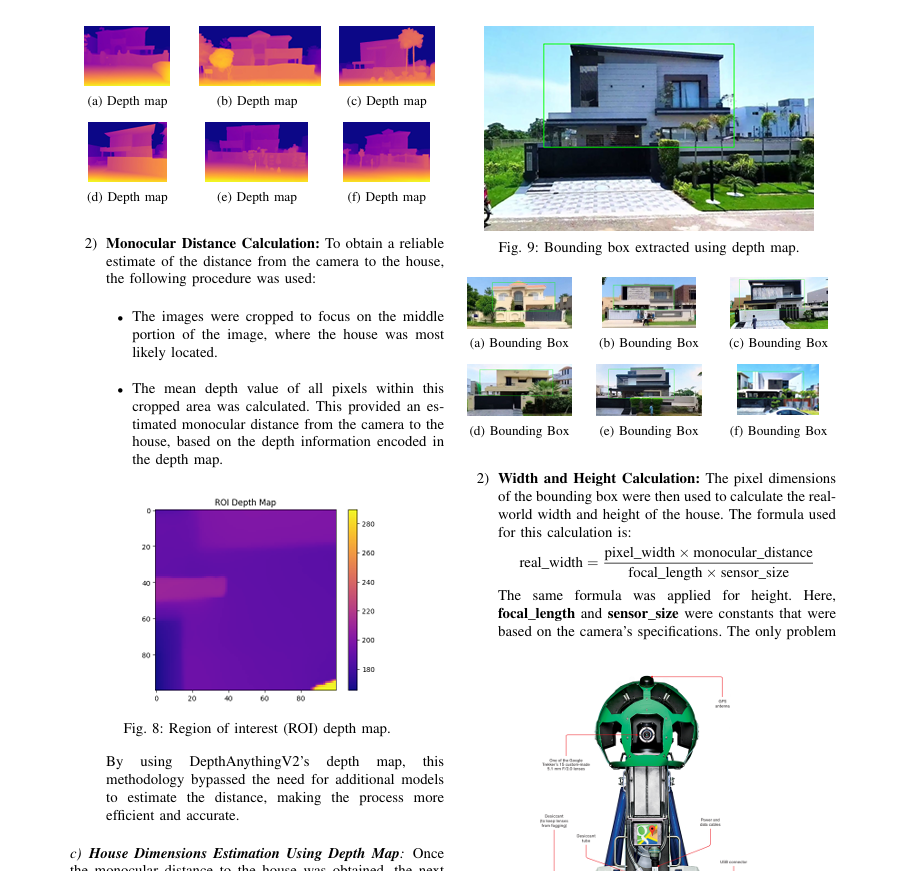

Monocular Distance Estimation
An application that estimated the cost of renovation of a structure using monocular distance estimation.
An application that estimated the cost of renovation of a structure using monocular distance estimation.
An interactive App that allows the user to apply different processing on an image.
A research based project where we collaborated with financial data bought from banks and tried to figure out the general public buying patterns.
This project's main motivation was the fact that renovators or construction workers have no accurate way to measure how much material is used in a specific structure. The construction companies cannot determine accurately the cost that would be required to fully renovate a particular structure. Basically, our approach was to use monocular distance estimation and proper 3d trigonometric principles to firstly determine the distance to the structure using a monocular camera and then by applying trigonometric principles and a deep learning approach to finally calculate the estimated renovation cost of that structure. We do this by estimating the distance from the camera and using that, we estimate the height, width and the depth of the structure and finally calculating the volume. After we get that, we can use a deep learning approach that is trained on a huge number of data to predict the estimated renovation cost in a particular region / area. In this project, We collected our own data by going to different places and taking pictures on our own. After that we made a web crawler using spyder which crawled on google maps and by going to the live view mode, we took tens of thousands of pictures in a particular area. For depth estimation we used DepthAnythingV2 model, and for renovation cost estimation, we developed our own deep learning model using PyTorch. This project paves the way for smarter city planning and urban development. By using state-of-the-art computer vision techniques, we hope that this project makes way for others to create innovative applications to help the real estate sector.
A desktop app made using the Tkinter library. The app was basically a digital image processing app where we could upload any image and perform image transformation and image processing techniques. All the image processing techniques were written using NumPy from scratch. Some of the algorithms were different types of thresholding, image filtering, blurring, enhancement, etc in real time.
This was a research based project where we initially gathered public data by surveys. Then, we collaborated with a bank and bought public data as well. The main goal of the project was to develop a predictive modelling approach where we find out different buying patterns of the general public. We also conducted a comparative analysis on deep learning models and simple machine learning models on the collected dataset.